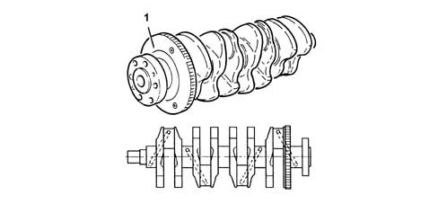
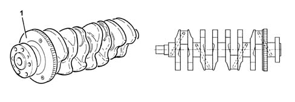
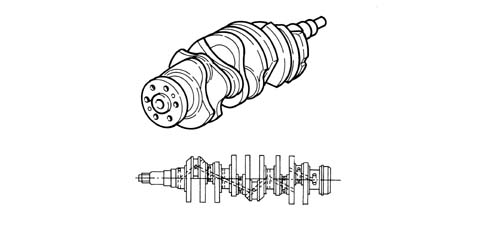

1024A FLYWHEEL SELF-LEARNING
- Path
- Descriptions > 10 ENGINE UNIT > 1024 CRANKSHAFT AND FLYWHEEL > 1024A FLYWHEEL SELF-LEARNING
- Kind
- system description
- Applies to
- all engines; all production periods
- Interactive page
- https://sloeber94.github.io/elrnDB-aGt/en/#/125000259
Applies to: engines: 2.0 JTS; all production periods
CONSTRUCTION FEATURES
It is made of forged high-tensile alloy steel, induction hardened on the journals and crankpins and rolled on the grooves.
It rests on five main bearings with bearing shells graded into three sizes.
The crankshaft endfloat is adjusted by two thrust washers located in the central main bearings.
Eight counterweights ensure that the rotating masses of the crankshaft are precisely balanced.
A channel runs along the inside of the shaft to lubricate the main bearings and big end bearings.
The phonic wheel (1) for the rpm sensor is mounted on the rear.

Applies to: engines: 1.8 T.SPARK; all production periods
OPERATION
It is of forged high-tensile alloy steel, induction hardened on the journals and crankpins and rolled on the grooves.
It rests on five main bearings with bearing shells graded into three sizes.
The crankshaft endfloat is adjusted by two thrust washers located in the central main bearings.
Eight counterweights ensure that the rotating masses of the crankshaft are precisely balanced.
A channel runs along the inside of the shaft to lubricate the main bearings and big end bearings.
The phonic wheel (1) for the rpm sensor is mounted on the rear.

Applies to: engines: 3.2 V6; all production periods
CONSTRUCTION FEATURES
Forged in high-tensile alloy steel and nitrided, it rests on four main journals and the endfloat is on the rear journal.
Nine counter-weights ensure that the rotating masses are precisely balanced.
A channel runs along the inside of the shaft to lubricate the main bearings and big end bearings.

Applies to: engines: 1.9 JTD 16V; all production periods
CONSTRUCTION FEATURES
Made from steel, it rests on five main journals and the endfloat is adjusted by two thrust washers located in the rear main bearing.
Eight counterweights ensure that the rotating masses of the crankshaft are precisely balanced.
A series of channels run along the inside of the crankshaft to lubricate the main bearings and big end bearings.
The phonic wheel (1) for the rpm sensor is mounted on the rear.